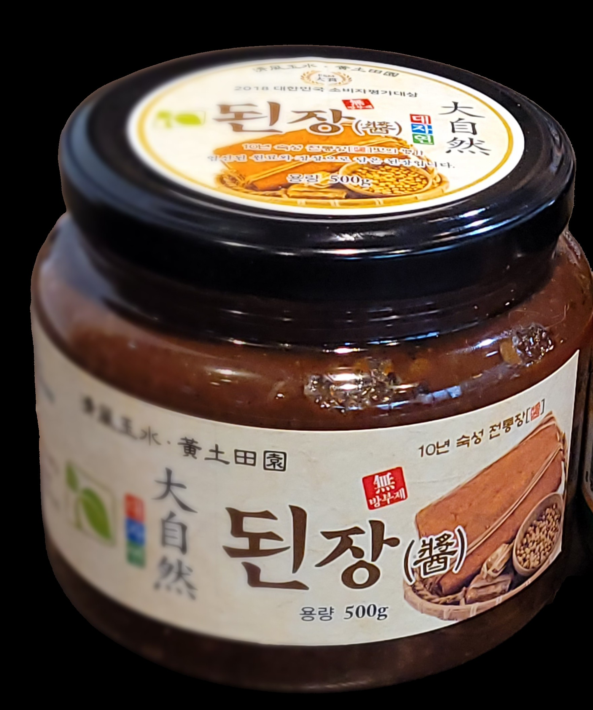

10년 숙성 진품장으로 정성껏 담근 전통 발효장입니다. 대두·소맥·천일염 등 엄선된 국내산 원료를 재래방식 그대로 담가, 2018 대한민국 소비자평가대상을 수상했습니다.
청풍옥수·황토전원의 자연 그대로에서, 대자연은 10년간 숙성한 전통 진품장을 재래방식 그대로 담아왔습니다. 방부제를 사용하지 않고 엄선된 국내산 원료만을 사용해, 2018년 대한민국 소비자평가대상을 수상했습니다.
된장찌개, 쌈장, 나물무침 등 일상 요리에 두루 활용할 수 있습니다. 국이나 찌개의 기본 육수 베이스로 사용하면 깊은 감칠맛을 더할 수 있습니다.
| 식품의 유형 | 전통된장 |
|---|---|
| 제품명 | 대자연 된장 |
| 원재료명 및 함량 | 대두 55%, 종국 1.5%, 소맥 1.5%, 천일염 15%, 물 32% |
| 내용량 | 500g |
| 원산지 | 국내산 100% |
| 제조원 | 인정원전통식품 |
| 판매원 | (주)대자연코리아 |
| 보관방법 및 유통기한 | 냉암소 냉장보관(5℃ 이하) · 제품 하단 표기일까지 |
| 소비자상담 | 010-7304-9700 |